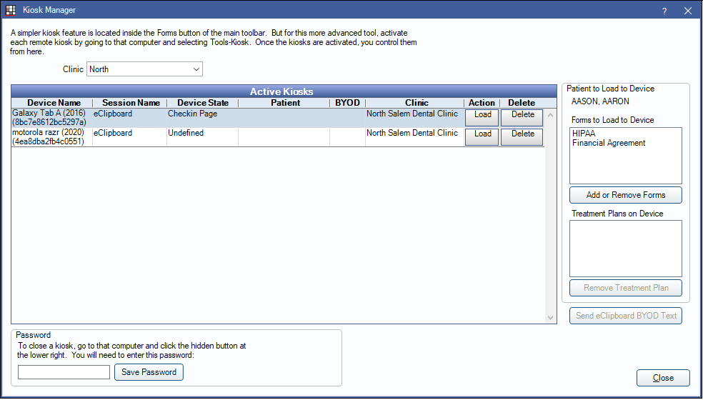

Kiosk Manager
The Kiosk Manager is used to load patient forms for the kiosk and eClipboard.
In the Main Menu, click Tools, Kiosk Manager.
The Kiosk Manager displays active kiosks for the office. Kiosks can be a computer or Windows tablet, or a device running the eClipboard Feature.
Use the Kiosk for patients to fill out forms electronically.
- Kiosk users will install Open Dental as normal on a Windows device, then open the Kiosk.
- eClipboard users will install eClipboard to an Android or iOS device.
Clinic: Select the clinic to view devices active for that location.
Active Kiosk: Displays active kiosks and eClipboard devices.
- Device Name: The name of the connected device.
- Session Name: The type of session. Either eClipboard or the device name for Kiosk.
- Device State: Displays the current page loaded on the device.
- Patient: The patient currently using the kiosk, if any.
- Clinic: The associated clinic.
- Action: Click Clear to clear the patient from the device. Click Load to load forms to that device.
- Delete: Remove the device from the list.
Patient on Device: Displays the patient for the selected device.
- Forms on Device: Displays forms currently loaded to the Kiosk or eClipboard device.
- Add or Remove Forms: Opens Patient Forms for the patient.
- Treatment Plans on Device: Displays treatment plans currently loaded to the eClipboard device.
- Remove Treatment Plan: Remove the treatment plan from the device.
Send eClipboard BYOD Text: Send a text message to the patient with a link to BYOD. See eClipboard Setup and BYOD: What Patient Sees.
Password: When using Kiosk on a Windows device, create a password needed to close the Kiosk window. To close the Kiosk, there is a hidden Close button in the lower right of the window. Click in the area to close or prompt for the password.
- If the Kiosk was launched from the Main Menu, it will also cause Open Dental to close.
- If the Kiosk was launched from Patient Forms, it will not close Open Dental.
Workflow
When using Kiosk, there are two options for launching forms (such as Consent Forms, Health History, etc.)
Option 1: Load forms to a different device.
- Select the patient to load forms for.
- Open the Kiosk Manager.
- Highlight the device the patient will use.
- Click Add or Remove forms.
- In the Patient Forms For window, click Add then highlight the needed forms.
- Click To Kiosk, then close. The forms will list in the Kiosk Manager.
- Click Load for the device. Forms will automatically list on the device.
Option 2: Load forms to the current device.
- Select the patient, then click Forms.
- Click Add then highlight the needed forms.
- Click To Kiosk.
- In the Patient Forms For window, click Kiosk. The kiosk will launch with the selected forms.
Software and Hardware
Requirements vary on the type of kiosk:
- To have patients fill out forms online, see Web Forms Feature.
- For devices running Windows, see Computer Requirements.
- For devices running eClipboard, see Tablet.